Trees up to 15 m tall.
15 ಮೀ. ಎತ್ತರದವರೆವಿಗೆ ಬೆಳೆಯುವ ಮರಗಳು
15 മീറ്റര് വരെ ഉയരത്തില് വളരുന്ന മരങ്ങള്.
மரம் 15 மீ. உயரம் வரை வளரக்கூடியது
Bark greyish, smooth; blaze cream.
ತೊಗಟೆ ಬೂದು ಬಣ್ಣದಲ್ಲಿದ್ದು ನಯವಾಗಿರುತ್ತದೆ;ಕಚ್ಚು ಮಾಡಿದ ಜಾಗ ಕೆನೆ ಬಣ್ಣದಲ್ಲಿರುತ್ತದೆ.
മിനുസമാര്ന്ന, നരച്ചനിറത്തിലുളള പുറംതൊലി; വെട്ടുപാടിന് ക്രീം നിറം.
மரத்தின் பட்டை சாம்பல் நிறம் கொண்டது, வழுவழுப்பானது, உள்பட்டை கிரீம் நிறமுடையது
Branches with architecture of “ Aubreville_model ”; branchlets terete with scars of fallen leaves.
ಕವಲುಗಳು “ಆಬ್ರೆವಿಲ್ಲೆ “ ಮಾದರಿಯಲ್ಲಿರುತ್ತವೆ;ಕಿರುಕೊಂಬೆಗಳು ದುಂಡಾಗಿದ್ದು ಎಲೆಉದುರಿದ ಗುರುತು ಸಮೇತವಿರುತ್ತವೆ.
ഒബ്രിവില്ലെ മാതൃകയില് ക്രമീകരിച്ചിരിക്കുന്ന ശാഖകള്; ഉപശാഖകള് ഉരുണ്ടതും, കൊഴിഞ്ഞുവീണ ഇലകളുടെ അടയാളങ്ങളുളളതുമാണ്.
கிளைகள் “ஆப்ரவில் மாதிரி” முறையில் கிளைக்கும், சிறிய நுனிக்கிளைகள் குறுக்குவெட்டுத் தோற்றத்தில் வளையமானது, மற்றும் இலைகள் உதிர்ந்ததால் உண்டாகும் தழும்பு காணப்படும்.
Leaves simple, alternate, spiral, clustered at twig ends; stipules lanceolate, 0.3 cm long, caducous; petiole 1.8-4.5 cm long, slender, terete, swollen at both ends, glabrous; lamina 4.5-9 x 2-4.5 cm, ovate to narrow ovate, apex bluntly long acuminate, base rounded or subtruncate, margin crenate, subcoriaceous, glabrous; midrib flat above; secondary_nerves 4-7 pairs, branched with domatia in the axils beneath; tertiary_nerves reticulo-percurrent; higher order nerves strongly reticulate.
ಎಲೆಗಳು ಸರಳವಾಗಿದ್ದು,ಪರ್ಯಾಯ ಮತ್ತು ಸುತ್ತು ಜೋಡನಾ ಮಾದರಿಯಲ್ಲಿದ್ದು ಕುಡಿಕೊಂಬೆಗಳ ತುದಿಯಲ್ಲಿ ಗುಂಪಾಗಿರುತ್ತವೆ;ಕಾವಿನೆಲೆಗಳು ಭರ್ಜಿಯಾಕಾರದಲ್ಲಿದ್ದು, 0.3 ಸೆಂ.ಮೀ.ಉದ್ದವಿದ್ದು,ಉದುರಿ ಹೋಗುವಂತಹವು;ತೊಟ್ಟುಗಳು 1.8 - 4.5 ಸೆಂ.ಮೀ. ಉದ್ದವಿದ್ದು,ತೆಳು ಹಾಗೂ , ದುಂಡಾಗಿರುತ್ತವೆ ಹಾಗೂ ಎರಡೂ ತುದಿಯಲ್ಲಿ ಊದಿಕೊಂಡಿರುತ್ತವೆ ಮತ್ತು ರೋಮರಹಿತವಾಗಿರುತ್ತವೆ;ಪತ್ರಗಳು 4.5 – 9 X 2 – 4.5 ಸೆಂ. ಮೀ. ಗಾತ್ರ, ಅಂಡಾಕಾರದಿಂದ ಸಂಕುಚಿತ ಅಂಡಾಕಾರದವರೆಗಿನ ಆಕಾರ, ಮೊಂಡು-ಅಗ್ರವುಳ್ಳ ಉದ್ದವಾದ ಹಾಗೂ ಕ್ರಮೇಣ ಚೂಪಾಗುವ ತುದಿ, ದುಂಡಾದ ಅಥವಾ ಉಪ-ಛಿನ್ನಾಗ್ರ ಮಾದರಿಯ ಬುಡ,ದುಂಡೇಣಿನ ಹಲ್ಲುಳ್ಳ ಅಂಚು ಹೊಂದಿದ್ದು , ಉಪ-ಕಾಗದವನ್ನೋಲುವ ಮೇಲ್ಮೈ ಹೊಂದಿದ್ದು ರೋಮರಹಿತವಾಗಿರುತ್ತವೆ; ಮಧ್ಯ ನಾಳ ಪತ್ರದ ಮೇಲ್ಭಾಗದಲ್ಲಿ ಚಪ್ಪಟೆಯಾಗಿರುತ್ತದೆ; ಎರಡನೇ ದರ್ಜೆಯ ನಾಳಗಳು 4-7 ಕವಲೊಡೆದ ಜೋಡಿಗಳಿದ್ದು ಪತ್ರದ ತಳಬಾಗದ ಅಕ್ಷಾಕಂಕುಳಿನಲ್ಲಿ ಸಹಜೀವಿ ಗೂಡುಗಳ ಸಮೇತವಿರುತ್ತವೆ; ಮೂರನೇ ದರ್ಜೆಯ ನಾಳಗಳು ಜಾಲಬಂಧ ನಾಳ ವಿನ್ಯಾಸದಲ್ಲಿದ್ದು ಎಲೆ ದಿಂಡಿಗೆ ಅಡ್ಡವಾಗಿ ಕೂಡುವಂತಹವು;ಮೇಲ್ದರ್ಜೆಯ ನಾಳಗಳು ಧೃಢವಾದ ಜಾಲಬಂಧ ನಾಳ ವಿನ್ಯಾಸದಲ್ಲಿರುತ್ತವೆ..
ലഘുവായ ഇലകള്, ഏകാന്തരക്രമത്തില്, സര്പ്പിളമായി, തണ്ടിന്റെ അറ്റത്തുമാത്രം അടുക്കിയ വിധത്തിലാണ്; 0.3 സെ.മീ നീളമുളള കുന്താകാരത്തിലുളള അനുപര്ണ്ണങ്ങള് വേഗം കൊഴിഞ്ഞ് പോകുന്നവയാണ്; രണ്ടറ്റത്തും വീര്ത്തിരിക്കുന്ന അരോമിലമായ ഉരുണ്ടതും നേര്ത്തതുമായ ഇലഞെട്ടിന് 1.8 സെ.മീ മുതല് 4.5 സെ.മീ വരെ നീളം; പത്രഫലകത്തിന് 4.5 സെ.മീ മുതല് 9 സെ.മീ വരെ നീളവും 2 സെ.മീ മുതല് 4.5 സെ.മീ വരെ വീതിയും, അണ്ഡാകാരം തൊട്ട് വീതികുറഞ്ഞ അണ്ഡാകാരം വരെയുമാണ്; മുനപ്പില്ലാത്ത നീളന്വാലുളള പത്രാഗ്രം, പത്രാധാരം വൃത്താകാരത്തിലോ ഏതാണ്ട് വെട്ടിമുറിച്ചതുപോലെയുമാണ്, അരികുകള് ദന്തിതമാണ്; ഉപചര്മ്മില പ്രകൃതം, അരോമിലം; മുകളില് പരന്നിരിക്കുന്ന മുഖ്യസിര; കീഴ്ഭാഗത്തെ കക്ഷങ്ങളില് ഡോമേഷ്യയോടുകൂടിയ ശാഖിതമായ 4 മുതല് 7 വരെ ജോഡി ദ്വിതീയ ഞരമ്പുകള്; ത്രിതീയ ഞരമ്പുകള് ജാലിത-പെര്കറന്റ് വിധത്തിലാണ്; മറ്റ് ഞരമ്പുകള് കനത്ത ജാലിതമാണ്.
இலைகள் தனித்தவை, மாற்றுஅடுக்கமானவை, சுழல் போன்ற அமைப்பு, சிறுகிளைகளின் நுனியில் இலைகள் கூட்டமாக மற்றும் நெருக்கமாக காணப்படும்; இலையடிச்செதில் ஈட்டி வடிவமுடையது, 0.3 செ.மீ. நீளமானது, உதிரக்கூடியது; இலைக்காம்பு 1.8-4.5 செ.மீ. நீளமானது, மெலிதானது, வளையமானது, இருமுனைகளிலும் உப்பியது, உரோமங்களற்றது; இலை அலகு 4.5-9 X 2-4.5 செ.மீ., முட்டை வடிவம் முதல் குறுகிய முட்டை வடிவம், அலகின் நுனி நீண்ட வால் போன்றது மற்றும் மழுங்கியது, அலகின் தளம் வட்டமானது அல்லது சிறிது சதுரமானது (சப்ட்ரன்கேட்), அலகின் விளிம்பு பிறை போன்ற ரம்ப பற்களுடையது, உரோமங்களற்றது, சப்கோரியேசியஸ்; மையநரம்பு மேற்பரப்பில் அலகின் பரப்பிற்கு சமமானது; இரண்டாம் நிலை நரம்புகள் 4-7 ஜோடிகள், நரம்புகள் கிளைத்தது மற்றும் நரம்புகள் இணையும் இடத்தில் டொமேஸ்சியா காணப்படும்; மூன்றாம் நிலை நரம்புகள் வலைப்பின்னல் அமைப்பு கொண்ட பெர்க்கரண்ட்.
Flowers axillary in racemes, white.
ಹೂಗಳು ಬಿಳಿಬಣ್ಣ ಹೊಂದಿದ್ದು ಮದ್ಯಾಭಿಸರ ಮಾದರಿಯ ಪುಷ್ಪಮಂಜರಿಯಲ್ಲಿರುತ್ತವೆ.
വെളുത്തപൂക്കള് കക്ഷീയ റസീമുകളിലുണ്ടാകുന്നു.
மஞ்சரி இலைக்கோணங்களில் அமைந்த ரெசீம், வெள்ளை நிறமான மலர்கள்.
Drupe, elliptic to 2 cm long, smooth, seed 1.
ಡ್ರೂಪ್ಗಳು ವಿಶಾಲವಾದ ಅಂಡವೃತ್ತಾಕಾರದಲ್ಲಿದ್ದು 2ಸೆಂ.ಮೀ. ಉದ್ದವಿದ್ದು ನಯವಾಗಿದ್ದು ಬೀಜವನ್ನೊಳಗೊಂಡಿರುತ್ತವೆ.
ഒറ്റവിത്തുളള കായ, 2 സെ.മീ വരെ നീളമുളള, മിനുസമുളള ദീര്ഘഗോളാകാരഡ്രൂപ്പ് ആണ്.
உள்ளோட்டுத்தசைகனி (ட்ரூப்), நீள்வட்ட வடிவமுடையது, 2 செ.மீ. நீளமானது, வழுவழுப்பானது, விதை ஒன்றுடையது.
 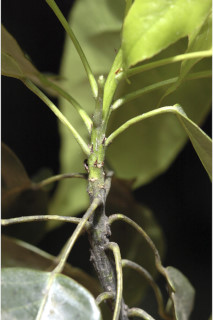
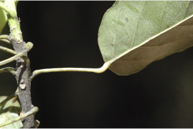
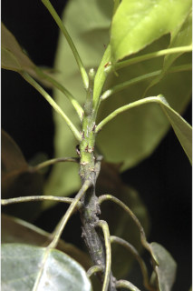
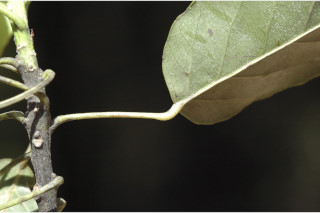
 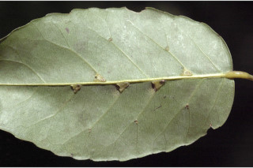
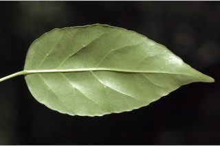
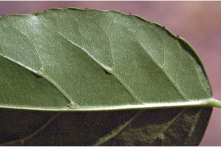
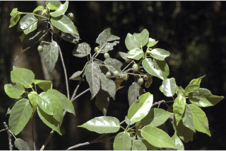
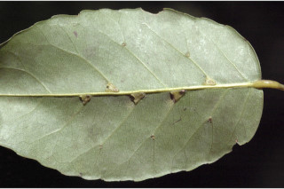
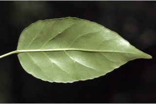
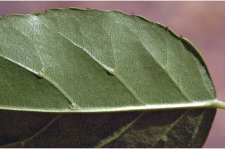
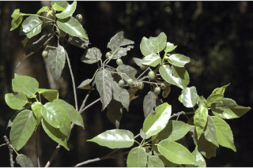
 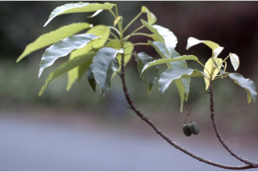
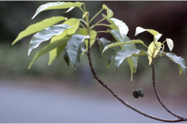
 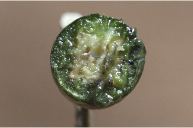
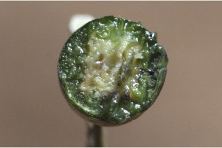